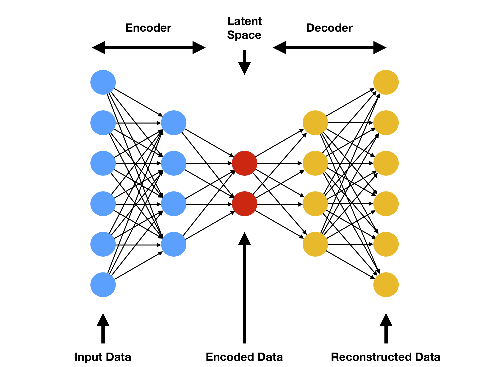

Bachelor Thesis Dimensionality Reduction
Table of Contents
- 1. Project scope
- 2. Autoencoders
- 3. Ideas for Hyperparameters
- 4. Git
- 5. INPROGRESS Code Documentation
- 6. TODOS
- 6.1. Code
- 6.1.1. DONE Vanilla Autoencoder
- 6.1.2. DONE VAE
- 6.1.3. DONE AVB
- 6.1.4. DONE logging
- 6.1.5. DONE tensorboard
- 6.1.6. DONE data loader
- 6.1.7. DONE cross validation
- 6.1.8. DONE parse config
- 6.1.9. DONE writer
- 6.1.10. DONE validate with different loss
- 6.1.11. DONE Create config parser module
- 6.1.12. HOLD Dict -> nametuple
- 6.1.13. INPROGRESS Graph module
- 6.1.14. HOLD Collect Data from simulation
- 6.2. Paper
- 6.1. Code
- 7. Professor
- 8. Other Students
- 9. DONE Init Presentation
- 10. Lines of Thoughts
- 11. PAPERS
- 11.1. INPROGRESS Dimensionality reduction
- 11.2. Old ideas
- 11.3. Old work
- 11.3.1. Level ground walking for healthy and transfemoral amputee models. Deep reinforcement learning with phasic policy gradient optimization
- 11.3.2. Deep reinforcement learning for physics-based musculoskeletal model of a transfemoral amputee with a prothesis walking on uneven terrain
- 11.3.3. Deep reinforcement learning for physics-based musculoskeletal simulations of healthy subjects and transfemoral protheses' users during normal walking
- 11.3.4. Learning to walk: Phasic Policy Gradient for healthy and impaired musculoskeletal models
- 11.3.5. Evaluating Deep Reinforcement Learning Algorithms for Physics-Based Musculoskeletal Transfemoral Model with a Prosthetic Leg Performing Ground-Level Walking
- 11.3.6. Deep Reinforcement Learning for Physics-based Musculoskeletal Simulations of Transfemoral Prosthesis' Users during the Transition between Normal Walking and Stairs Ascending
- 11.3.7. Testing For Generality Of A Proximal Policy Optimiser For Advanced Human Locomotion Beyond Walking
1 Project scope
The project aim to build an autoencoder for dimensionality reduction. In particular, this will be used to hopefully enhance the performance of a DRL algorithm for opensim-rl simulation. In this project different type of Autoencoders will be tested.
2 Autoencoders
2.1 DONE Vanilla
The vanilla autoencoder is the classical one. Composed by an encoder and a decoder without any kind of constriction.
2.2 DONE VAE
The Variational autoencoder is a modified version of a vanilla AE which forces the distribution of the latent space to be a gaussian.
2.3 DONE AVB
Adversarial Variational Bayes is a relatively new ideas which exploits some Bayesian concept to force a particular latent space distribution. All is done in an adversarial environment.
2.4 HOLD B-VAE?
3 Ideas for Hyperparameters
Since we will have to fit quite a lot of hyperparameters we tried to come up with some cleaver ideas to remove some of these hyperparameters.
3.1 Number of neurons per layer
The first hyperparameters we would like to remove is the number of neurons per layer. Since we are doing an autoencoder and therefore we are trying to find a compression function f we can assume that the number of neurons per layer is defined by some kind of function h that given the number of layers N, the numeber of dimension of the input I and the final number of dimension of the latent space Z returns the number of neurons for a specific layer. This function can be either linear or non-linear. The first intuition is that if h is linear it should be somewhat easier to learn a good compression function f. However, until now, we do not have any mathematical backgroud for this intuition! We need to do more research!
The first possible implementation of this function is defined as follows: (n is the index of the layer for which we are trying to find the number of neurons)
\[n_1 = I\] \[n_N = Z\] \[n_i = n_{i+1}*\lambda\] From these equations we can find out the equation which define the value of λ quite intuitevely. \[ \lambda = \sqrt[N-1]{\frac{I}{Z}} \] Now we can derive the number of layers given the number of neurons for the first and last layer \[ n_i = n_N * \prod_{x=1}^{N-i} \lambda \] \[ n_i= n_N * \lambda^{N-1}\] Substitute λ with the prievious found equation. \[ n_i = n_N * \left(\sqrt[N-1]{\frac{I}{Z}}\right)^ {N-i} \] \[ n_i = n_N * \left(\frac{I}{Z}\right)^{\frac{N-i}{N-1}} \] \[ n_i = Z * \left(\frac{I}{Z}\right)^{\frac{N-i}{N-1}} \]
4 Git
FIXME add thesis code repo
5 INPROGRESS Code Documentation
Visit this file to see the current documentation
WORK IN PROGRESS the documentation is in progress and it can be potentially not up to date
6 TODOS
6.1 Code
6.1.1 DONE Vanilla Autoencoder
6.1.2 DONE VAE
6.1.3 DONE AVB
6.1.4 DONE logging
6.1.5 DONE tensorboard
6.1.6 DONE data loader
6.1.7 DONE cross validation
6.1.8 DONE parse config
6.1.10 DONE validate with different loss
6.1.11 DONE Create config parser module
6.1.12 HOLD Dict -> nametuple
6.1.13 INPROGRESS Graph module
6.1.14 HOLD Collect Data from simulation
6.2 Paper
6.2.1 INPROGRESS Review all papers
6.2.2 INPROGRESS Why we use autoencoders
7 Professor
- Raffealla carloni
- SkypeID rafficar
- BlueJeans https://bluejeans.com/821650990 id number = 821650990
8 Other Students
- c.m.sreedhara@student.rug.nl
- B.N.Ogum@student.rug.nl -> Master student for dim red
- Chadan
9 DONE Init Presentation
10 Lines of Thoughts
10.1 Autoencoder
An Autoencoder is a special network architecture which approximate two different function encode and decode such as: \[decode(encode(\hat{X})) = \hat{X}\]
Note most of the the time is not an = but an ≈
The network is therefore composed by two different sub networks. An Encoder which can be defined as: \[encode \rightarrow \mathbb{R}^n \times \mathbb{R}^m \] And a Decoder which can be defined as: \[decode \rightarrow \mathbb{R}^m \times \mathbb{R}^n \]
There two constraint to this two function. The first one is that decode must be the inverse of the encode. The second one is that \[ m << n \]
NOTE when the second constraint is sudisfacted, the autoencoder is cosidered an undercomplete autoencoder. However, every time we will use the autoencoder word we will refer to undercomplete autoencoder.
The second constraint is an architectural one, meanwhile the first one is a functional constraint which will be achived after the network is trained.
The error function is therefore a reconstruction error or distance measure between the input and outuput.
The layer between the Encoder and the Decoder express what is usually knonw as Latent space which dimensionality is \(\mathbb{R}^m\).
We will from now on refer to the Latent space as \(\hat{z}\). For clarity we can rewrite the above formulas as: \[encode(\hat{X}) = \hat{z}\] \[decode(\hat{z}) \approx \hat{X}\]
 As Wang stated 1
Auto-encoder can be seen as a way to transform representation.
10.2 TODO PCA
find a linear subspace with lower dimension than the initial dataset while trying to maintain most of the variability
10.3 TODO LDA
linear approach
10.4 TODO LLE
non-linear approach
10.5 TODO Isomap
non linear generalization of classical multidimensional scaling
11 PAPERS
11.1 INPROGRESS Dimensionality reduction
11.1.1 Common knowledge resources
11.1.2 INPROGRESS Autoencoders:
- TODO Adversarial Variational Bayes: Unifying Variational Autoencoders and Generative Adversarial Networks 2
- TODO Generalized Autoencoder: A Neural Network Framework for Dimensionality Reduction3
- TODO Auto-Encoding Variational Bayes 4
- TODO InfoVAE: Balancing Learning and Inference in Variational Autoencoders 5
11.1.3 INPROGRESS Dimensionality reduction:
- DONE Auto-encoder based dimensionality reduction 1
Contributions
We start from auto-encoder and focus on its ability to reduce
the dimensionality, trying to understand the difference between
auto-encoder and state-of-the-art dimensionality reduction
methods. The results show that auto-encoder indeed learn
something different from other methods.
We preliminarily investigate the influence of the number of
hidden layer nodes on the performance of auto-encoder on
MNIST and Olivetti face datasets. The results reveal its possible
relation with the intrinsic dimensionality.
- Summary
Shows comparison of Autoencoder and other dimensionality reduction methods (e.g. PCA,LLE) Notable results: Autoencoder different than other dimensionality reduction. Potentially detect repetitive structures. Dimensionality of the Latent space is best when it maches the intrinsic dimensionality of the dataset.
- Opinions
This clearly shows how Autoencoder can be essentially different and more usefull than other dimensionality reduction methods. This consolidate the choice of using autoencoders in the thesis.
- Summary
- DONE Dimensionality Reduction of SDSS Spectra with Variational Autoencoders 6
- Summary
Show how AEs were already used in astrony for different dimensionality reduction/classification task with success. Moreover, it aims to address the limitation of PCA using VAE. Results show how on this dataset (SDSS sloan digital sky survey) the autoencoder outperforms PCA in particular with low dimension latent space(or component for PCA) They mainly use InfoVAE5,a variant of the VAE, focused on trying to disentangle (e.i. force mapping different inputs to disjoint distribution ) the different latent space dimensions.
- Summary
- DISCARDED Dimensionality reduction for EEG-based sleep stage detection: comparison of autoencoders, principal component analysis and factor analysis 7
- TODO A deep adversarial variational autoencoder model for dimensionality reduction in single-cell RNA sequencing analysis 8
11.1.4 AE + RL:
- TODO The Dreaming Variational Autoencoder for Reinforcement Learning Environments 9
- TODO AutoEncoder-based Safe Reinforcement Learning for Power Augmentation in a Lower-limb Exoskeleton 10
- TODO Robot skill learning in latent space of a deep autoencoder neural network 11
- TODO Deep Variational Reinforcement Learning for POMDPs 12
- TODO VARL: a variational autoencoder‑based reinforcement learning Framework for vehicle routing problems 13
- TODO On the use of Deep Autoencoders for Efficient Embedded Reinforcement Learning 14
- TODO DARLA: Improving Zero-Shot Transfer in Reinforcement Learning 15
11.2 Old ideas
11.2.1 DONE Deep reinforcement learning for modeling human locomotion control in neuromechanical simulation 16
- Summary
review paper, it introduces in general the topic. it illustrate previous methodology and then it moves on Deep Rl. It talks about Learn to Move competition and the different techniques used in that competition. Finally some future directions.
- Opinions
This paper is really interesting in particular the part about Learn to Move and future directions.
- Ideas
It suggest imitation learning and hierarchical learning